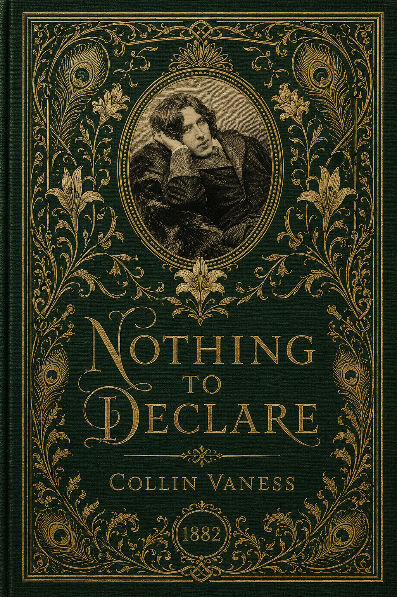

Historical Fiction · Standalone Novel
Nothing to Declare
A Novel of Oscar Wilde in America
“I have nothing to declare except my genius.” He never said it. That was the whole point.
Get release news →
About the novel
“I have nothing to declare except my genius.”
— attributed to Oscar Wilde, January 1882. He never said it. That was the whole point.
In January 1882, an unpublished aesthete named Oscar Wilde stepped off a steamer in New York with a year of American lectures ahead of him — and a tour manager who had decided to build the first modern celebrity. Nothing to Declare follows the tour through three points of view: the man being made, the man making him, and the young reporter whose counter-record would, eventually, outrun the official one.
It is a novel about performance and the machinery behind it — the manufactured anecdote, the planted quote, the cultivated outrage, the rehearsed spontaneity. It is also a novel about three people who choose, by the end, who they want the record to remember them as. Drawn from Wilde’s own published works, lectures, letters, and recorded conversations — each chapter set against an epigraph from the man’s own pen.
The book

Nothing to Declare
43 chapters. Three points of view. One year in the life of the man who learned to perform himself, the country that learned to watch, and the reporter who learned, eventually, how to write what he saw.
For readers of
Colm Tóibín’s The Master, David Lodge’s Author, Author, Hilary Mantel’s historical voice work, and Michael Cunningham’s The Hours.